Screenshots
Create prompts that you want to ask users.
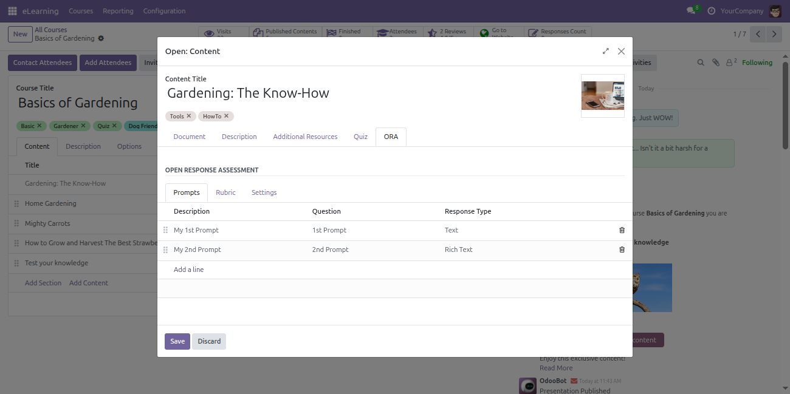
The creator can define the criteria on which responses will be assessed.
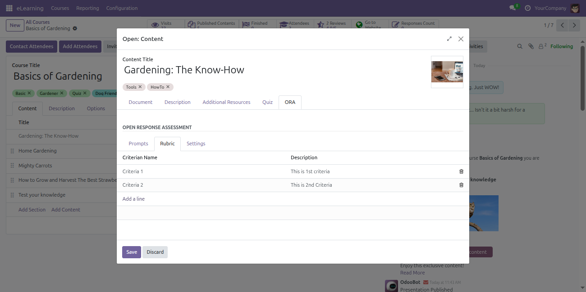
You can enable or disable notifications for users, peers, and staff. When a user submits an assessment, peers (if enabled) receive notifications; otherwise, the staff is notified. After peer evaluation, staff is notified, and after staff evaluation, users receive notifications.
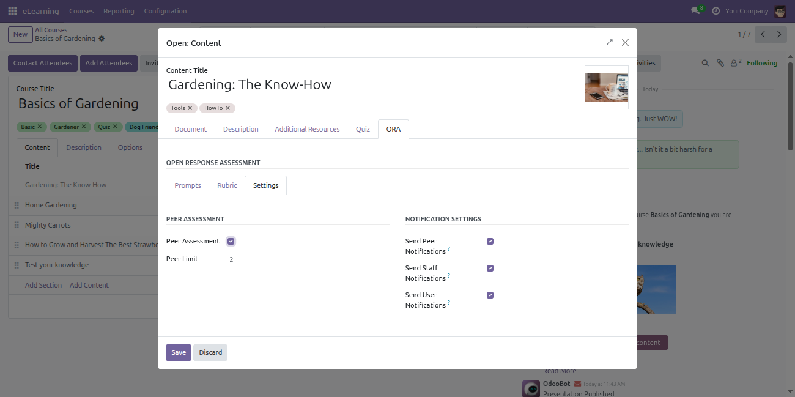
Learners answer the assessment directly within the course.
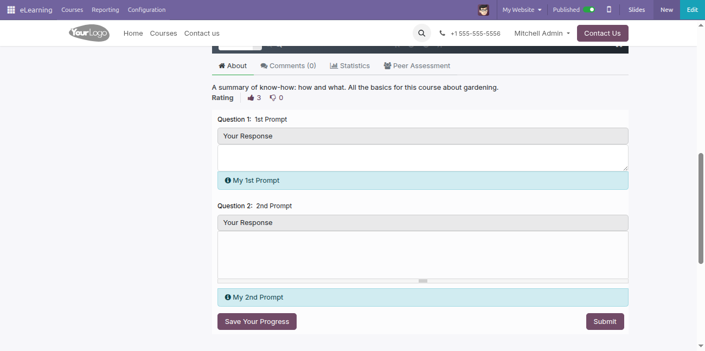
Once a user submits a response, it will be visible as a card.
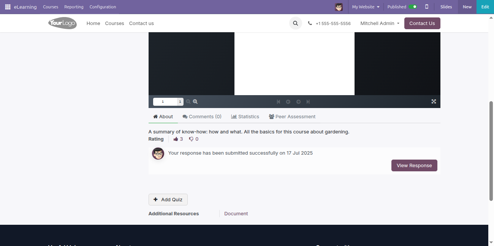
Once the user submits the assessment for review, an email and notification will be sent to a peer if available; otherwise, it will be sent to the staff.

After a user submits a response, the creator can assess it or provide feedback.
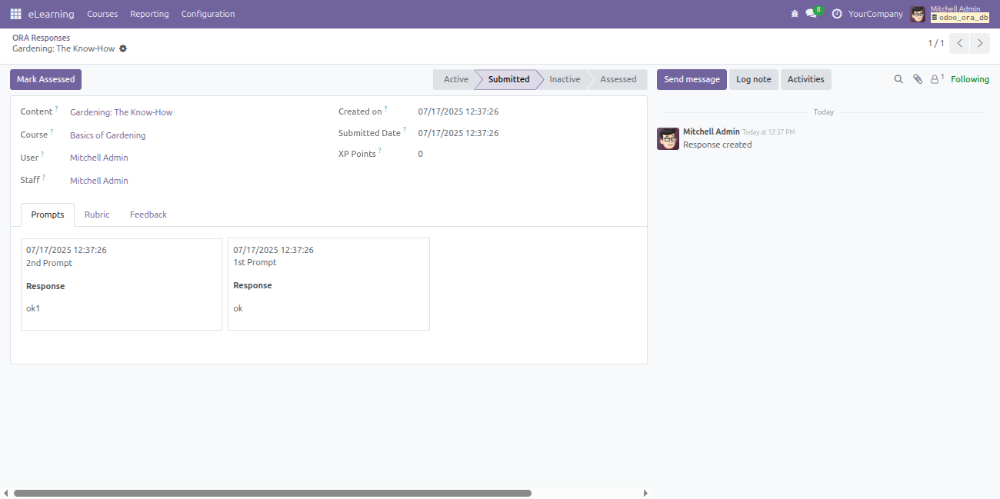
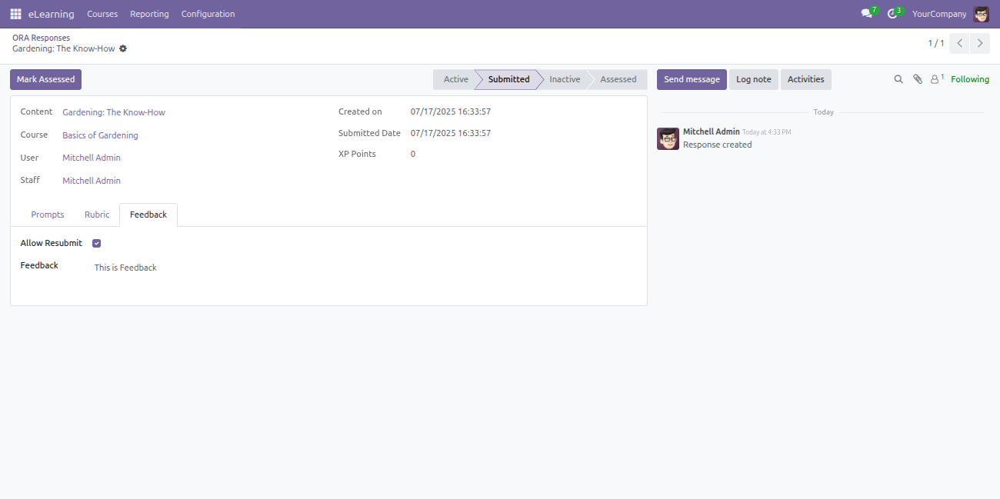
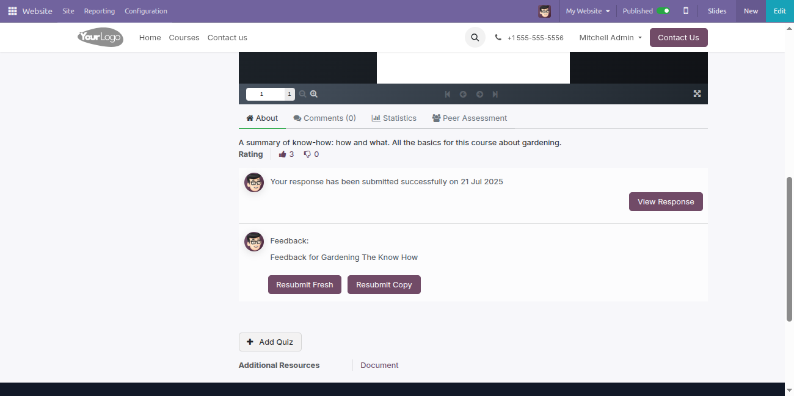
Once the peer reviews the user's assessment, an email and notification will be sent to the staff to review the assessment.

Once the staff reviews the assessment, the user will receive an email and notification stating that their assessment has been reviewed by the staff and, if applicable, by a peer.

The creator can assess the response directly from the response itself.
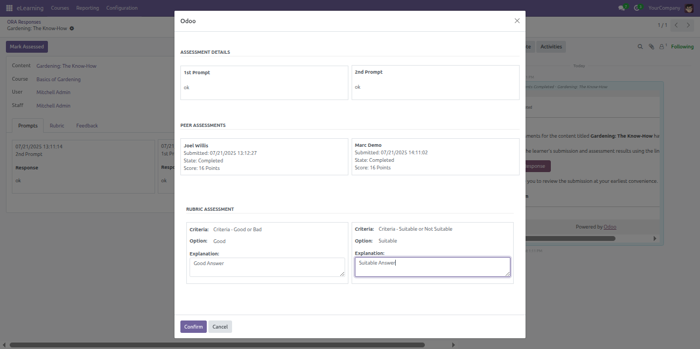
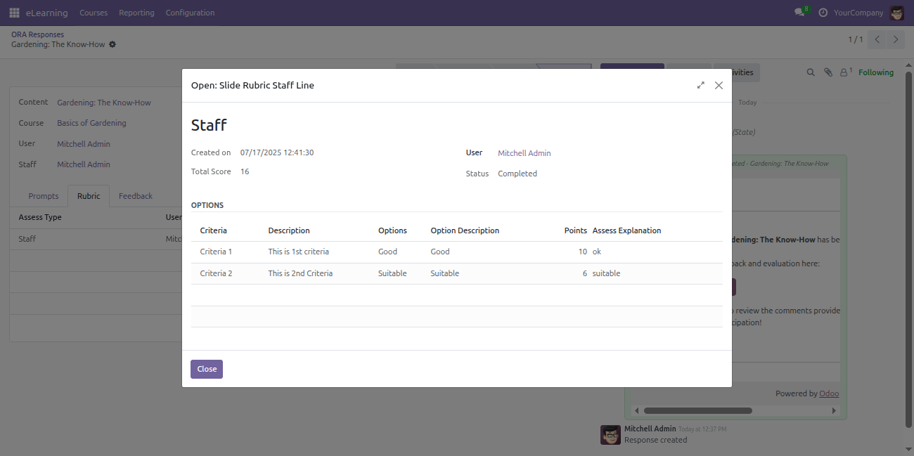
Once the creator assesses the response, the learner can view the assessment and the XP points received.
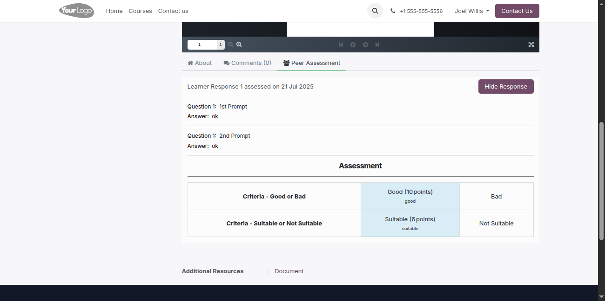
Enable or disable peer assessment settings from the course settings.
Learners’ responses will be automatically assigned to peers for review.
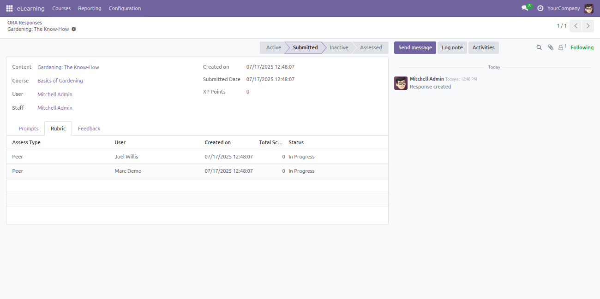
A learner can see the peer assessment once another learner's response is allocated to them.
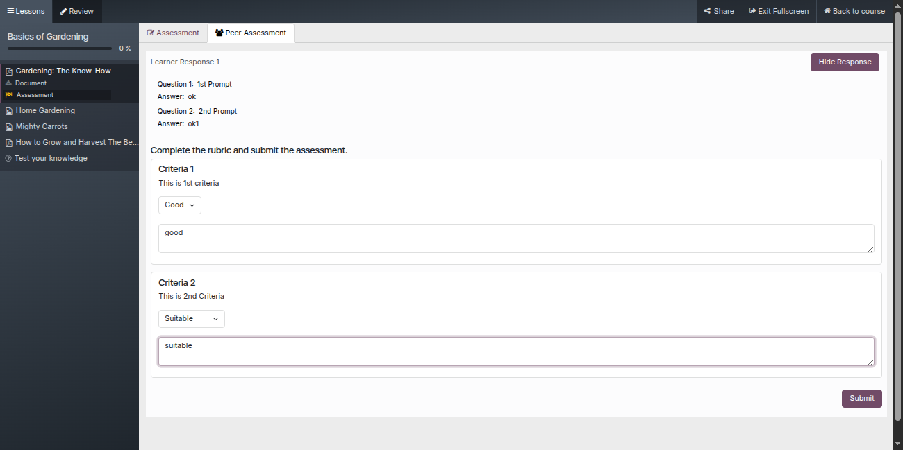
Once a learner submits the assessment, they can view it in a table format.
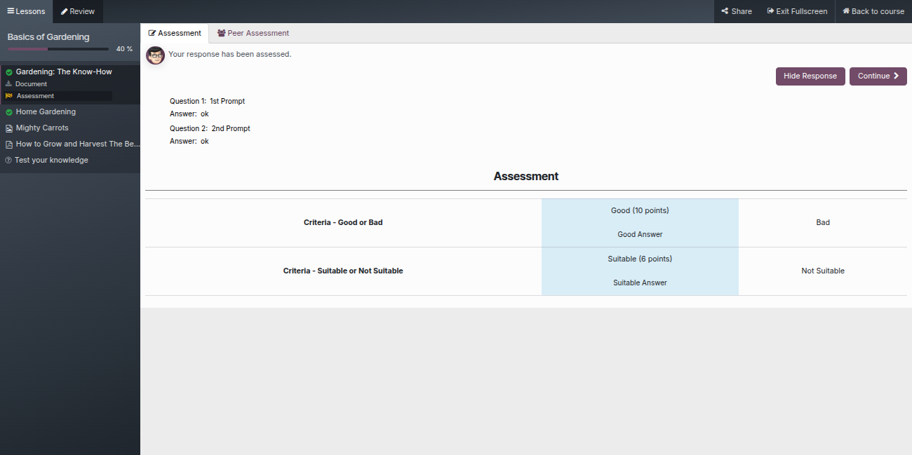